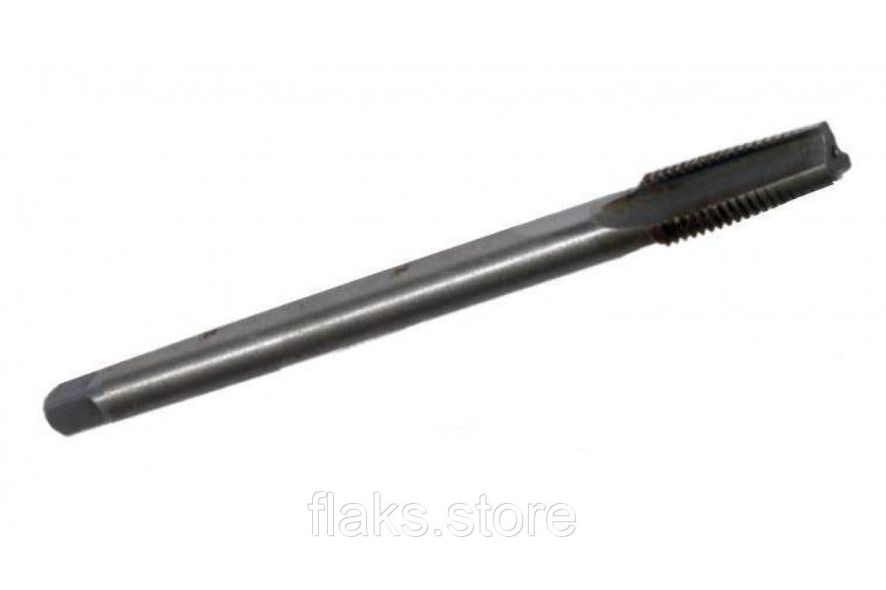

Мітчики трапеція та іншіМетчики трапеция и др
Мітчик для трапецеїдальної різьби Tr 16х4 №2 із комплекта із 3-х штук 9ХС 140х90Метчик для трапецеидальной резьбы Tr 16х4 №2 из комплекта из 3-х штук 9ХС 140х90
1260 UAH
без ПДВбез НДС
НаявністьНаличие: 11 шт.
КодКод: FLK-02530
ОписОписание
Мітчик для трапецеїдальної різьби Tr 16х4 №2 із комплекта із 3-х штук 9ХС 140х90 — професійний металорізальний інструмент для нарізання внутрішньої метричної різьби в отворах. Основні параметри: різьба Tr 16. В наявності 11 шт. на складі у Харкові. Ціна 1260 грн без ПДВ. Опт і роздріб, відправлення по всій Україні. Замовлення від 2 000 грн.Метчик для трапецеидальной резьбы Tr 16х4 №2 из комплекта из 3-х штук 9ХС 140х90 — профессиональный металлорежущий инструмент для нарезания внутренней метрической резьбы в отверстиях. Основные параметры: резьба Tr 16. В наличии 11 шт. на складе в Харькове. Цена 1260 грн без НДС. Опт и розница, отправка по всей Украине. Заказ от 2 000 грн.
ХарактеристикиХарактеристики
| Тип інструментуТип инструмента | МітчикМетчик |
|---|---|
| КатегоріяКатегория | Мітчики трапеція та іншіМетчики трапеция и др |
| РізьбаРезьба | Tr 16Tr 16 |
| Напрямок різьбиНаправление резьбы | праваправая |
| СтанСостояние | новийновый |
| Код товаруКод товара | FLK-02530FLK-02530 |
| НаявністьНаличие | 11 шт.11 шт. |